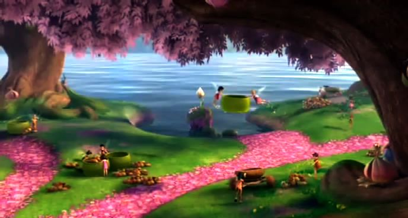
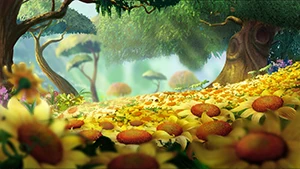
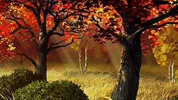
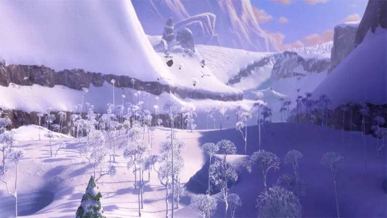

*Nota: Las hadas mencionadas a continuación pueden pertenecer a más
de una categoría. Al fin y al cabo, aunque estén por categoría,
un hada del otoño con el don del viento y un hada del verano
con el don del viento pueden co existir, pero no hacen exactamente
lo mismo: mismo don, diferentes tareas.
Hadas de la primavera

Los rayos de sol caen con más fuerza, los árboles y plantas despiertan,
y las hadas han dado comienzo a la primavera.
En esta época del año, aparecen insectos que ayudan a polinizar, y fueron
pintados por las hadas de la primavera, y los animales tienen a sus crias,
también con la ayuda de las hadas de la primavera.
Algunos de los dones de estas hadas serían los siguientes:
Hadas del jardín: Cuidan de las flores, plantas y árboles, ayudándolas a crecer.
En primavera, pintan las flores pétalo por pétalo y preparan el despliegue perfecto para que los capullos se abran
al unísono; e incluso entrenan a los brotes para cuando suceda el cambio de estación,
sepan dónde echar raíces.
Hadas de la luz: Derriten la nieve del invierno, guían la luz solar para hacer crecer las semillas
sembradas y tejen los arcoíris para que se desplieguen en el cielo después de la lluvia.
Hadas del agua: Viajan planta por planta para repartir la cantidad de agua perfecta a las hojas y flores,
llenan las nubes de agua con la ayuda de las hadas del viento y limpian los alrededores de ramas u hojas
que se pudieron quedar estancadas en los arroyos.
Hadas de los animales: Guían a los animales que despiertan en la primavera, enseñan a los polluelos recién nacidos
a romper el cascarón, volar y preparan los coros de los pájaros para las mañanas.
Hadas del verano

El calor se intensifica, los días se hacen más largos y el cambio de primavera a verano ha llegado.
Aunque algunas hadas trabajen, otras también se dedican a relajarse en la pradera, pero quién podría juzgarlas? Los rayos de sol
caen por tu cara, por tu cuerpo, brindándote una calidez que... de repente, el girasol a tu derecha se ve bastante cómodo...
Algunas de las hadas que trabajan en esta época del año, son:
Hadas de la luz: Siendo las responsables de iluminación intensa, se encargan de organizar la iluminación de la noche con ayuda de las luciérnagas,
siguen tejiendo arcoíris y redirigen la luz para llevarla a lugares no iluminados.
Hadas del vuelo: Generan brisas y corrientes para conllevar el calor sofocante, distribuyen semillas y polen gracias a sus remolinos de aire,
y hasta transportan mensajes urgentes entre las estaciones de la Hondonada gracias a su vuelo veloz.
Hadas del agua: Mantienen la hidradración y la frescura, dirigiendo el agua a las raíces de los cultivos, manteniendo el agua de los estanques
limpios y distribuyendo el agua de manera estratégica por toda la Hondonada.
Hadas de la cocina: Al abundar ingredientes frescos en esta época,
estas hadas lo aprovechan al máximo: extrayendo aceites esenciales para los banquetes de la Hondonada,
procesar legumbres frescas...
Si el vídeo de arriba no se muestra, haz click a este link
Hadas del otoño

Las hojas cambian de color y empiezan a caer; calabazas, castañas y setas hacen presencia y ahora las mañanas y noches se vuelven frescas.
Las hadas trabajar arduamente para perfeccionar los tonos del otoño, algunas hadas destacadas son:
Hadas de las hojas: Estas hadas se enfocan en el cuidado de las hojas del otoño:
pintan y perfeccionan las tonalidades de las éstas, las recortan y les dan forma.
Hadas del arte: Abarcando más terreno que las hadas de las hojas, las del arte pintan el paisaje,
decorando la naturaleza o preparando la mezcla de colores perfectos.
Hadas de los animales: Ayudan a las criaturas del bosque a recolectar comida, preparase para migrar
o hibernar y hasta a tejer sus propios nidos invernales
Hadas del vuelo: Vuelan preparando ráfagas de viento precisas para que las hojas caigan pero nunca mueran,
derribándolas de los árboles en el momento perfecto.
Llegada del Otoño a Tierra Firme (vídeo más corto):
Hadas del Invierno

Las hadas del invierno son únicas en comparación con el resto de las hadas, ya que viven en completamente distintas temperaturas,
en un inicio el resto de hadas tenían prohibido cruzar la frontera: las hadas del invierno, si la cruzaban, podrían llegar a romperse las alas
por el cambio abrupto de temperatura; y las hadas de las demás estaciones también podían dañar sus alas o morir de frío.
Así que, al principio no se sabía mucho con respecto a esta estación.
Sus talentos están relacionados con el frío, los más conocidos entre estos son:
Hadas de la escarcha: Estas hadas tienen el poder de envolver plantas, objetos e incluso animales, en capas de escarcha
y mantenerlos seguros sin alterar su estado actual.
Hadas de los copos de nieve: Son las responsables de los diseños de los copos de nieve, crean estos patrones detalladamente
haciéndolos únicos entre sí.
Hadas de los glaciares: Trabajan moldeando y dándoles forma a los paisajes helados, bloques de hielo y
formaciones glaciares.
Hadas de los animales del invierno: Realizan las mismas tareas que las hadas de los animales de las otras estaciones,
solo que con los animales nativos del invierno, como los búhos nivales
Hadas del cuidado del bosque: Su trabajo va mucho más allá de limpiar la nieve, estas hadas ven al bosque como uno más,
centran su magia en manetener los árboles a salvo del frío extremo, detectan anomalías, controlan las plagas y hacen que la transición
de estación en la frontera no dañe la naturaleza y raíces del Árbol de Polvo de Hadas para llegar a ellos sano y salvo.
Dato Curioso
Como pequeño dato curioso en general es que, como las hadas ya nacen con sus talentos, un hada de otro don no podría practicar otro don que no fuera el suyo.
Por ejemplo, si un hada del agua quisiera "convertirse" en un hada del viento/vuelo, no podría; podría intentar imitar el talento de la otra, pero no
le saldría de manera natural sino forzada, y probablemente cause problemas al intentarlo.
Y para terminar, adjuntaré un par de vídeos por si hay curiosidad de qué pasaría si un hada lo intentara.